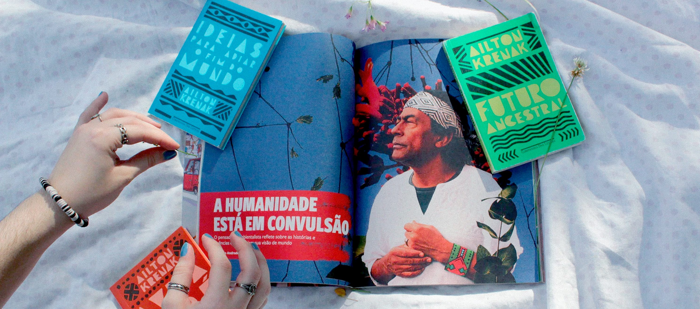
Vizão
A Revista VIZÃO é criada diante de um desafio ao transformar o tema "Saúde" em um projeto editorial acadêmico. A partir disso, o projeto se debruça sobre a ansiedade climática como recorte temático, entendendo que sobreviver ao fim do mundo, resgata quem sempre soube viver nele. Fundamentada no conceito de "Futuro Ancestral" de Ailton Krenak, em que passado, presente e futuro caminham juntos, construímos uma publicação organizada como tutorial de sobrevivência, guia espiritual e resgate ancestral, rompendo fronteiras coloniais para dar protagonismo aos povos originários.
DisciplinaProjeto Editorial
EquipeLaura Alcantara, Luigi Cortopassi, Leandro Zampirolo, Thiago Augusto e Naian Menginelli
Ano2025-1
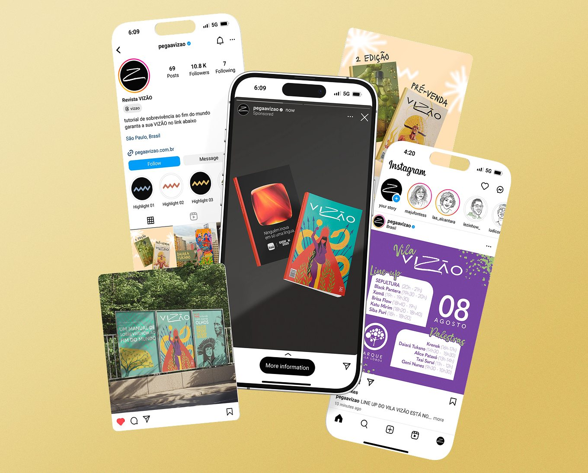
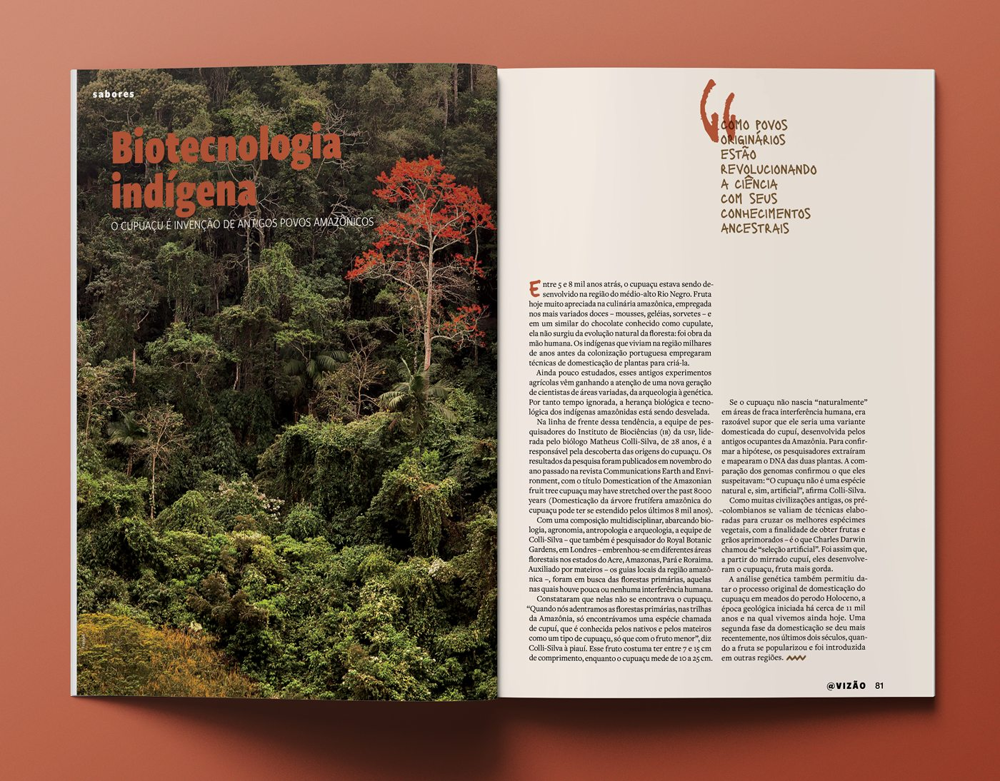
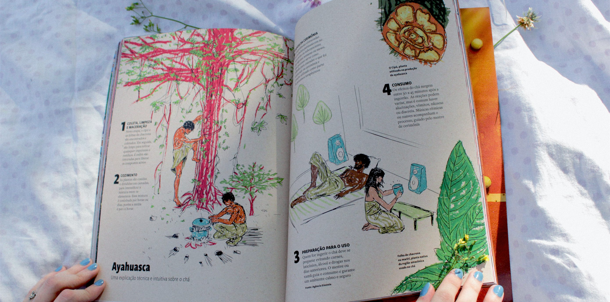
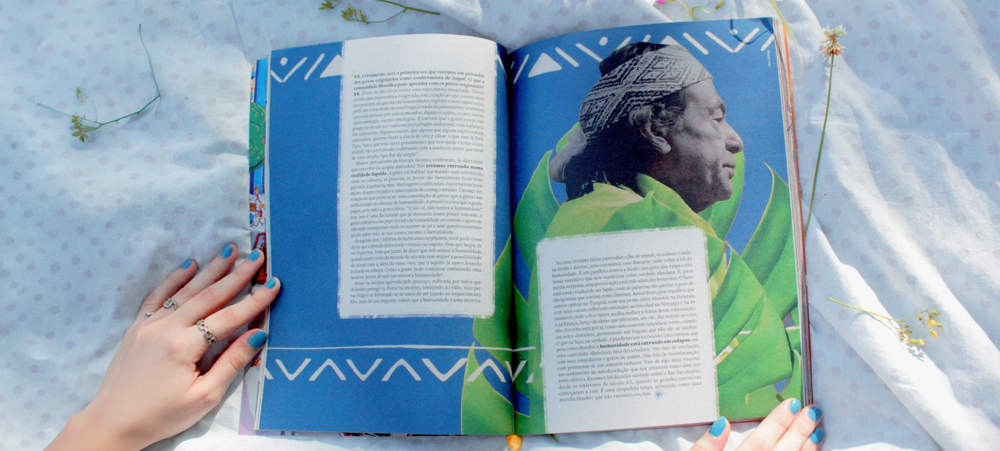


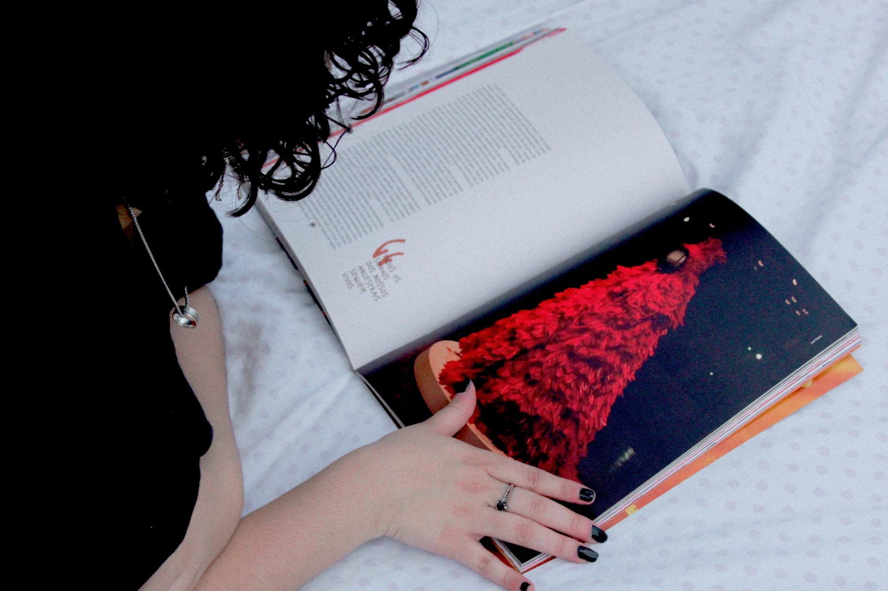
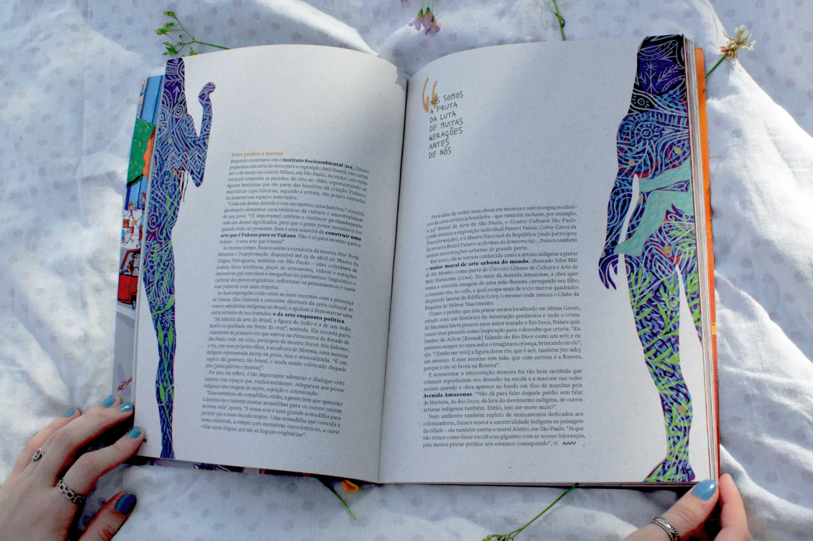
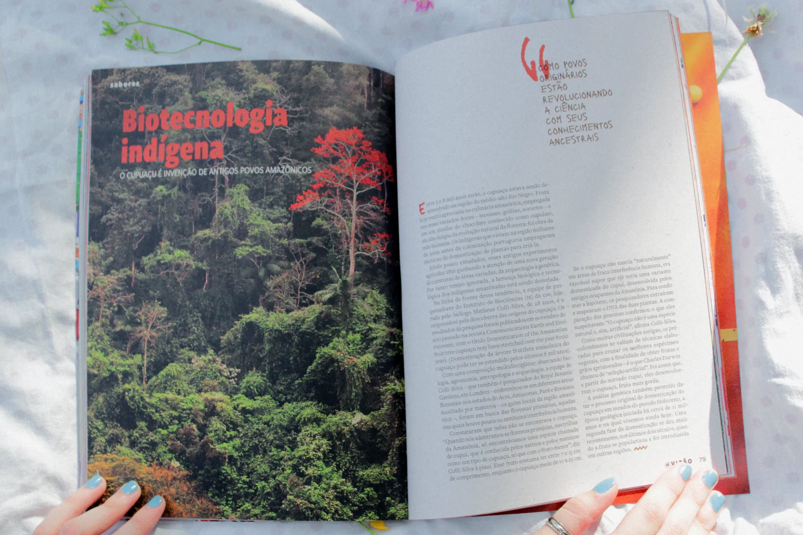
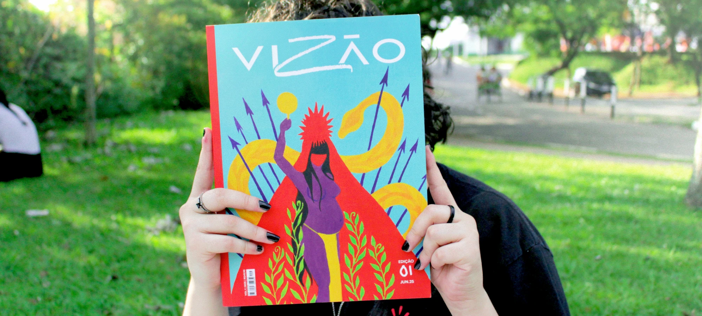


reconectar jovens desesperançosos com a vida e à natureza através da verdade daqueles que sempre estiveram aqui.
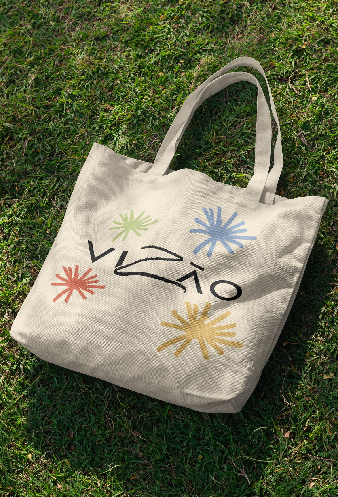
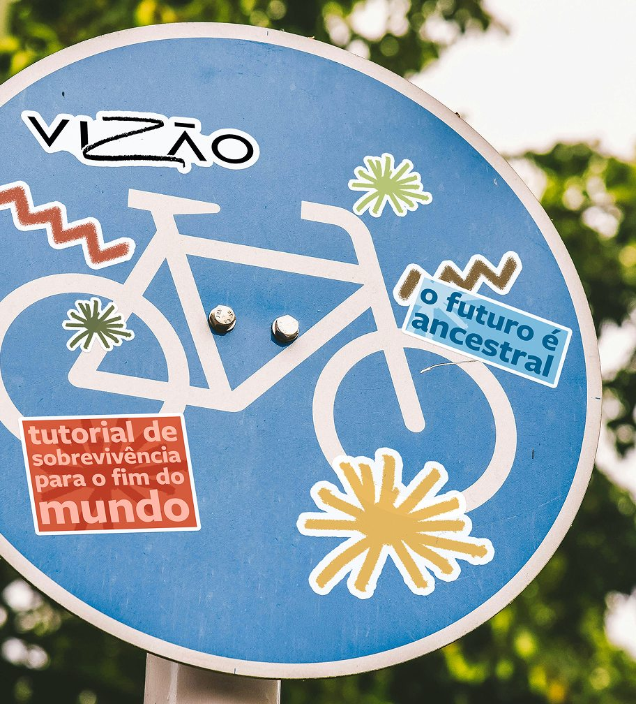
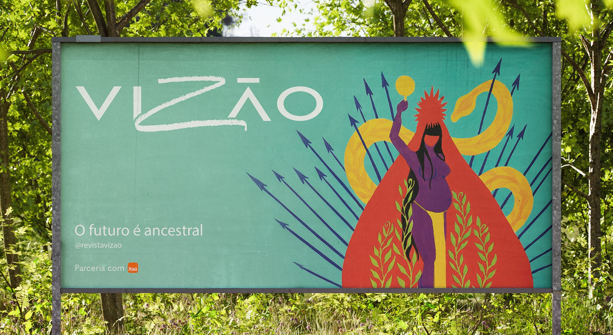
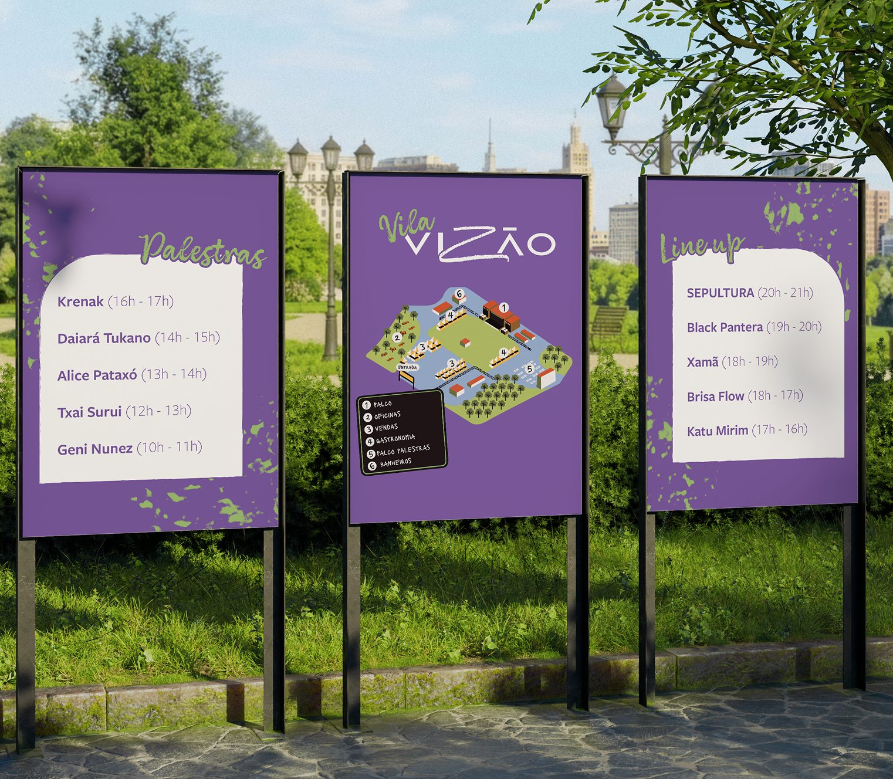
Vila Vizão, o encontro presencial da revista, nasce como um espaço de pertencimento que leva para além das páginas a reconexão com a natureza e com os saberes dos povos originários.
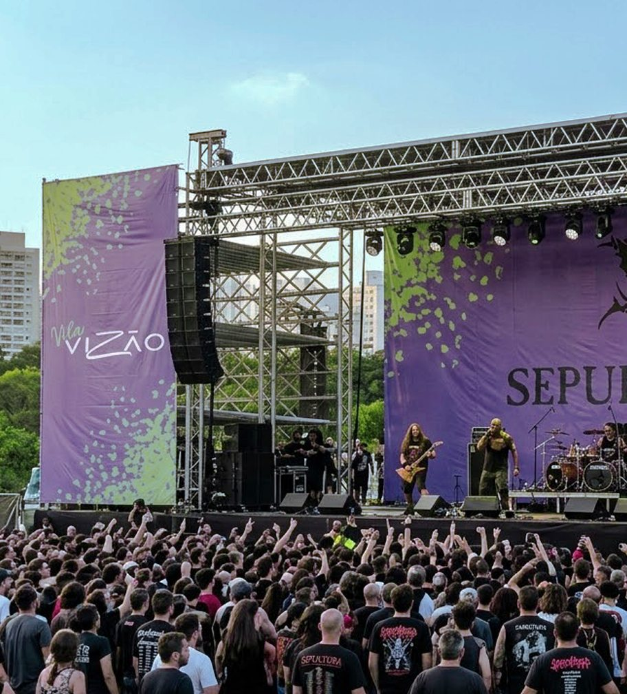
nessa parte haverá uma parte para ver o livro de forma virtual, no qual as pessoas podem passar as páginas